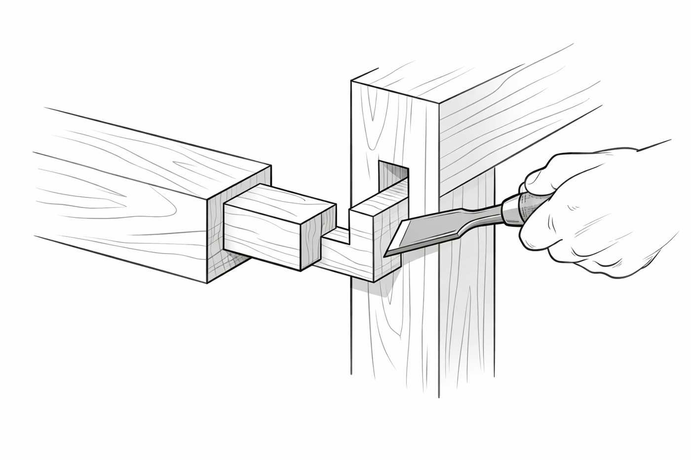
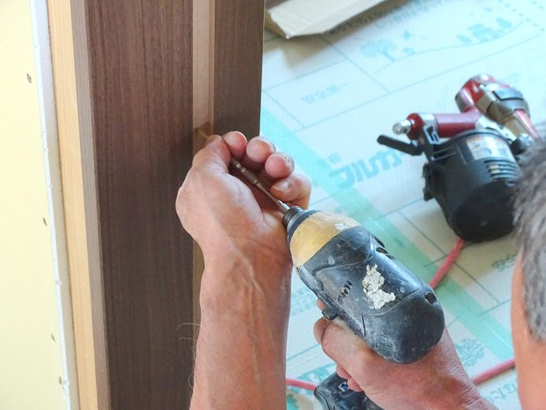
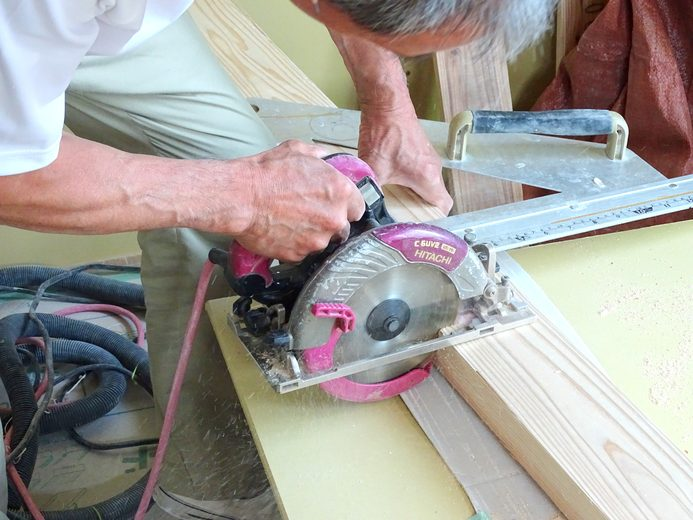
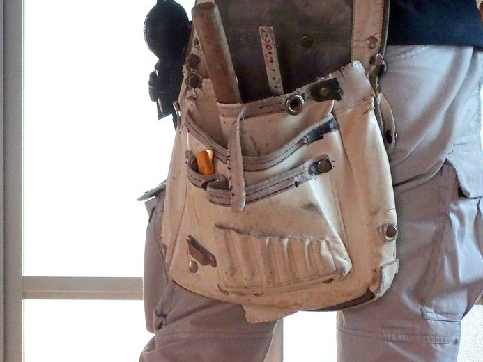
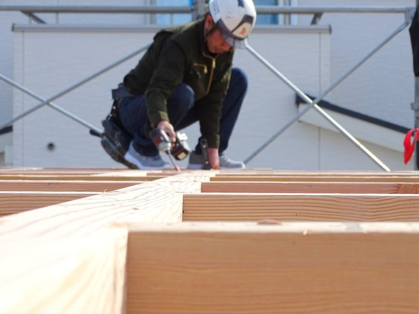
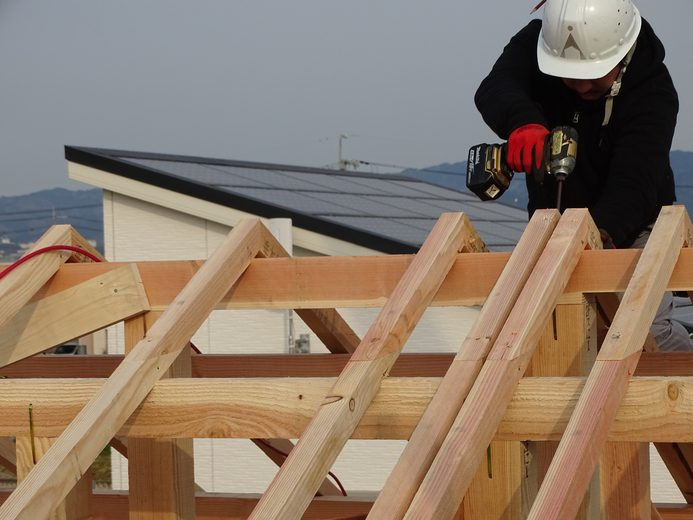

Craftsmen
木を、がっちり組む。
自社の大工と、専属の職人チーム
土台は湿気とシロアリに強い国産檜の4寸角。柱や梁は適材適所の無垢材を、金物でしっかり連結します。見えなくなる骨組みほど、ていねいに。
大工歴43年の社長のもと、いつも同じ顔ぶれの専属職人がつくります。

図解は仮（AI生成）土台＝国産檜（特一等・4寸角）、柱＝国産杉、横架材＝米松。一部に集成KD材。木の性質に合わせて使い分けます。
床合板は1F 28mm／2F 12mm＋28mm。耐力面材は大建ダイライトMS・ノボパン（特類9.0mm）です。
国産檜（特一等・4寸角）。湿気とシロアリに強い。
国産杉。
米松。一部 集成KD材。
木造軸組構法。910mmピッチで柱を配置し、構造用パネル＋筋交いを併用。




